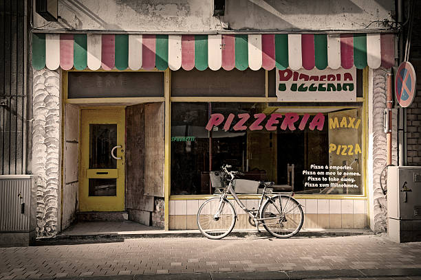

Bob's Pizzeria is a beloved neighborhood pizzeria known for its mouthwatering Pizzeria and soft atmosphere.
Nestled on the corner of Pizzeria Street and Pineapple Avenue, it exudes a rustic charm with its red-brick façade adorned with colorful murals depicting scenes of Italy.
Step inside, and the sweet aroma of freshly baked dough and bubbling cheese fills the air, welcoming patrons to indulge in a slice of culinary delight.
From classic Cheese to inventive combinations like the Spicy Hawaiian or BBQ Chicken, each Pizzeria is crafted with the finest ingredients and expertly baked to perfection in a traditional wood-fired oven.
Whether it's a casual dinner with friends or a quick lunch on the go, Bob's Pizzeria offers a slice of comfort and flavor that keeps customers coming back for more.

Legend has it that Bob's Pizzeria was founded in the heart of Little Italy by the great pizza artist, Bob Salvatore, in the late 1960s.
Bob, a first-generation Italian immigrant with a secret family recipe for pizza dough passed down through generations, opened the doors of his humble establishment with nothing but a dream and a determination to share his love for authentic Italian cuisine with the world.
Despite facing initial challenges, Bob's dedication to quality and his warm hospitality quickly won over the locals, and word of mouth spread like wildfire.
Soon, Bob's Pizzeria became a beloved neighborhood institution, with lines stretching around the block for a taste of his signature pies.
Over the years, the pizzeria has weathered its fair share of ups and downs, including a disastrous fire in the '80s that nearly destroyed the original brick oven.
Yet, through sheer grit and determination, Bob rebuilt his beloved pizzeria, emerging even stronger and more beloved by the community.
Today, Bob's Pizzeria stands as a testament to the enduring legacy of one man's passion for pizza and the enduring bonds forged over slices shared with friends and family.
To look at our selection of various selections of food from pizza to calzone, or see the reviews of our lovely patrons use the navigation links to your left!